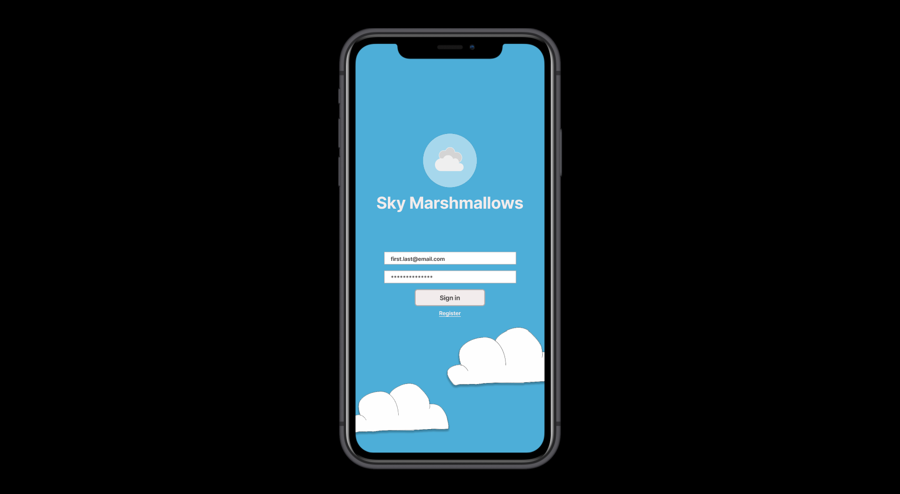

Citizen Science Application for Cloud Research by Sky Marshmallows

User Research | March - June 2021
Researched how users interact with Citizen Science applications to design an application for cloud science observations.
The research focused on four personas: children, teachers, scientists, and everyday people.
The purpose of this project was to create an engaging, fun application for contributing to cloud science.
Our design process included user research, jounrney mapping, scenarios, storyboarding, prototyping, and usability studies.